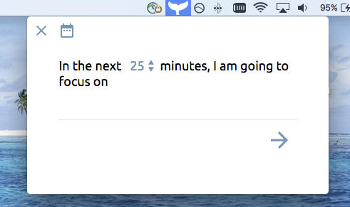
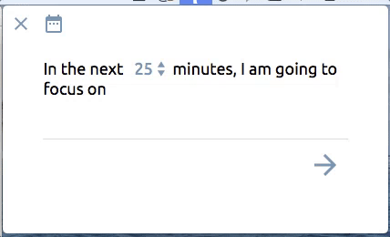
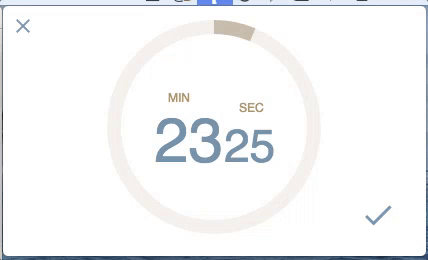
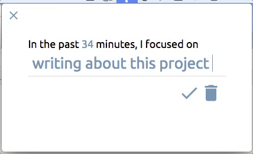
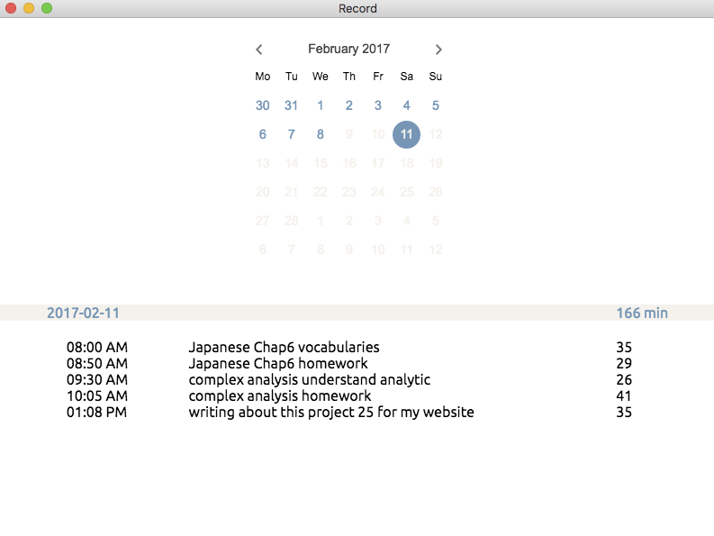

I find myself easily get distracted when I work on my computer. So I build this menu-bar desktop application to help me to stay focused when I work.
I think it's helpful to write down a very specific and small task that I want to focus in the next 25 minutes on before working. After 25 minutes, the app will inform me that time is over. If I want to keep on working for a while, the timer is still counting the time that I'm spending on this task. When I finish, I can go back to the app and shortly summerize what I've done based on my plan.
All the record will be saved. I can check from the app and see how I spent my time.
This project is built with Electron. It'll be launched soon.